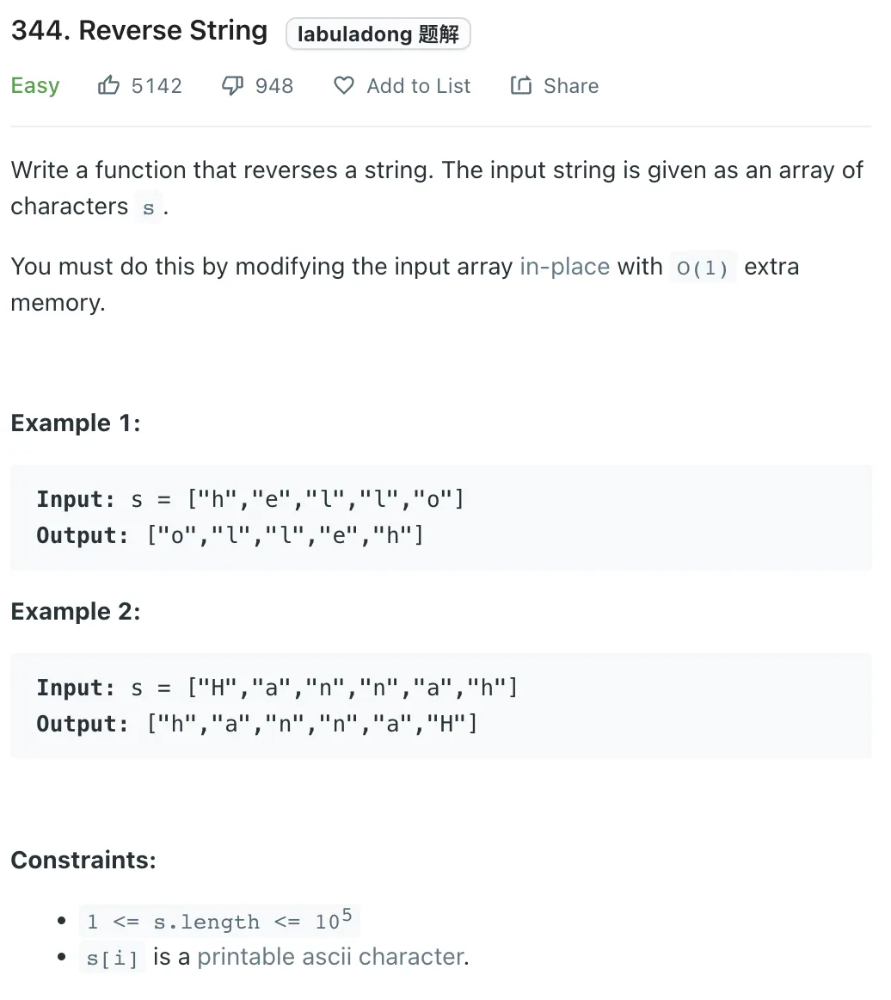

344. Reverse String
考過的公司：Asked by: Shopee
Question

先自己想想看 🤔Try it yourself first 🤔
✍🏽 My Solution
Runtime: 1 ms, faster than 96.51% of Java online submissions for Reverse String. Memory Usage: 58.3 MB, less than 9.34% of Java online submissions for Reverse String.
/*
len = 5
0 1 2 3 4
h e l l o
0 -> 4
1 -> 3
2 -> 2
*/
class Solution {
public void reverseString(char[] s) {
int n = s.length;
int i = 0;
int j = n-1;
while (i < j) {
char tmp = s[i];
s[i] = s[j];
s[j] = tmp;
i++;
j--;
}
}
}
//2022.07.17
class Solution {
public void reverseString(char[] s) {
int left = 0, right = s.length - 1;
while (left < right) {
swap(s, left, right);
left++;
right--;
}
}
private void swap(char[] arr, int i, int j) {
char tmp = arr[i];
arr[i] = arr[j];
arr[j] = tmp;
}
}
🧠 Thought Process
- Why did I choose this particular implementation?
- 雙指針指向字串數組頭尾，依序交換，直到 i ≥ j 就停止
- What is the time/space complexity of my solution? How do I know?
- time: O(n)
- space: O(1)
Solution #1 [Two Pointer]
class Solution {
public void reverseString(char[] s) {
int n = s.length;
for (int left = 0, right = n - 1; left < right; ++left, --right) {
char tmp = s[left];
s[left] = s[right];
s[right] = tmp;
}
}
}
Explanation (in my words)
- What is the space/time complexity of their solution?
- Time: O(n)
- Space: O(1)